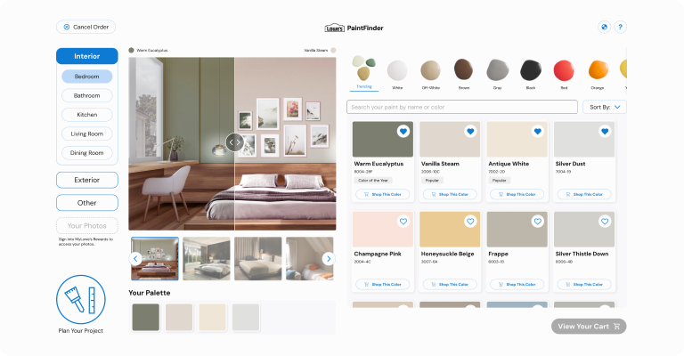
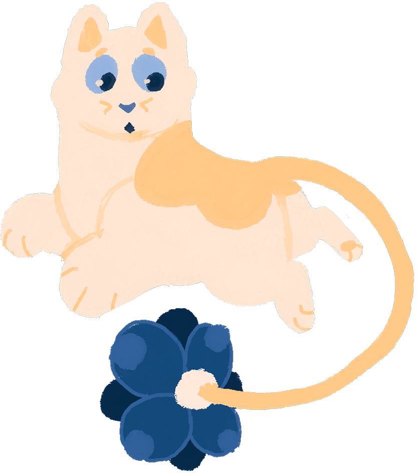
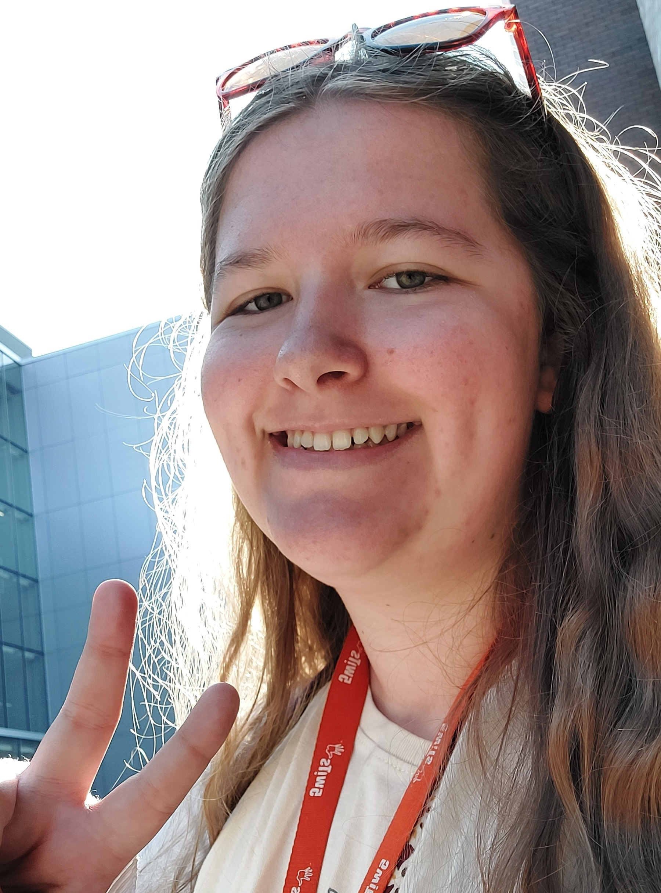

Lowe’s PaintFinder
A paint visualization kiosk that allows Lowe’s shoppers to plan paint projects in minutes.
I believe that good design balances clarity with delight. I create apps, websites, and design systems that meet people’s needs, and bring them joy along the way.


A paint visualization kiosk that allows Lowe’s shoppers to plan paint projects in minutes.

An AI-powered bookmark that turns budding readers into ravenous bookworms.

An app for New Yorkers to house their driver’s license and all other important identifiers in one place.

I’m Kiera Szuba, and I love it when useful things also look cool!
I found my love of interactive design growing up in Buffalo, NY, always being drawn to the art and movement that brings life to my home. I’ve called the arts my home since the beginning, but my desire to channel my artistic craft into helping real people led me to the wonderful world of UX/UI design.
My BFA in New Media Design at Rochester Institute of Technology taught me how to value the users of my designs above all else. There, I found my love for thoroughly researching into my users’ needs, and crafting thoughtful designs that both help and delight them.
When I’m not hard at work making unforgettable user experiences, I keep my brain at work in other ways, such as doodling in my sketchbook or going down rabbit holes for worldbuilding!